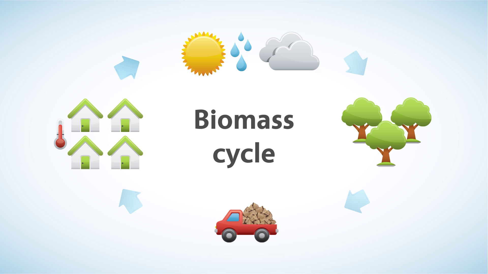

Биомаса е органска материја од растително или животинско потекло која може да се користи како гориво или како суровина за добивање гориво. Во биомасата од расти-телно потекло спаѓаат дрво, дрвени отпадоци добиени при сечење и преработка на дрвото, грмушки, енергетски шуми (шуми специјално одгледувани за добивање дрво за гориво), остатоци од земјоделско производство, треви, алги и водни билки. Под биомаса од животинско потекло се подразбира отпадокот (животинското ѓубре) што се добива при шталско одгледување на стока. Биомасата од растително потекло е најстар извор на енергија, кој човекот го користел од дамнешни времиња. Историски гледано, дрвото претставувало примарно гориво на кое човекот му го должи својот опстанок и развој. И денес, во ерата на нафтата, гасот, јагленот, електричната енергија и др., во земјите во развој дрвото сеуште е најважен извор на енергија во домаќинствата (за подготовка на храна и греење), како и за мало-стопанските објекти (пекари, циглани и др.). Во сиромашните предели, за голем дел од населението дрвото претставува основно гориво за подготовка на храна и за греење. Во руралните подрачја, во зависност од климатските карактеристики, енергијата за готвење изнесува околу 50÷80 % од вкупната енергетска потрошувачка. Користењето на биомасата за енергетски цели освен од количеството, видот и составот, зависи од нејзината распореденост на теренот, сезонската расположливост, формата и содржината на влага.
Според енергетскиот биланс, биомасата учествува со 6% од вкупната примарна енергија во Република Северна Македонија, односно 9,5% од вкупната потрошувачка на енергија. Најупотребуван ресурс од биомасата во Северна Македонија е дрвото. Биомасата, форма на дрво или јаглен речиси исклучиво се користи во домашниот сектор. Државата има голем потенцијал за искористување на биогасот од животинско ѓубриво за енергетски намени, како и производство на биогориво од растителни култури.
